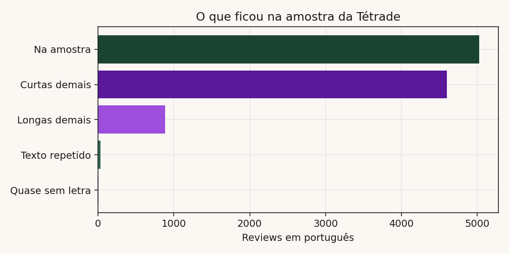
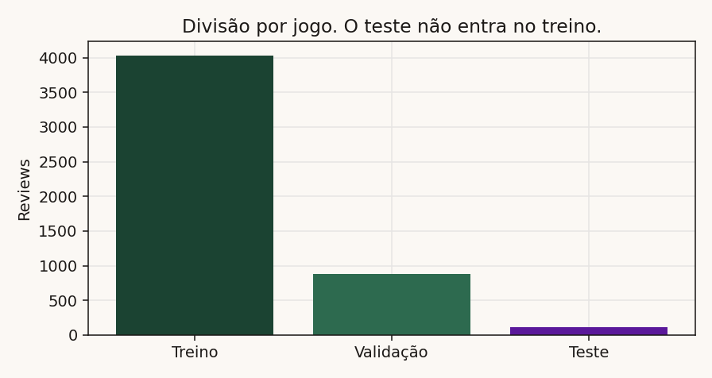

Trabalho de conclusão · documento para o orientador
O que foi testado, por que cada prova existe e o que o número desta execução permite afirmar. 3 de novembro de 2026. Nenhuma chamada à Gemini e nenhum treino de modelo de língua.
O Pixel Oracle lê reviews de jogos parecidos com um pitch e mostra o que os jogadores elogiam e criticam. Não prevê venda. Esta rodada faz outra medida, mais estreita: a review inteira recebe um rótulo em cada eixo da Tétrade Elemental de Jesse Schell. Eixo, aqui, é a parte do jogo de que o texto fala.
Preço, estúdio, comunidade e “ótimo jogo” sem alvo não entram em eixo nenhum. O rótulo não é uma nota. Sai da contagem de pedaços citados: só elogios é Positivo, só críticas é Negativo, falou sem julgar é Neutro, elogio e crítica no mesmo eixo é Misto, não falou é Não mencionado. Os três mistos (mais elogios, empate, mais críticas) viram uma classe só nesta prova, porque com poucos exemplos eles ficam instáveis. A contagem continua guardada, então a separação pode voltar sem reanotar.
| Prova | Pergunta | Nesta execução |
|---|---|---|
| 1. Amostra | O texto entra sem autor e sem repetir? | 5.027 reviews, 205 jogos, zero colunas de autor. |
| 2. Rótulo | A conta do manual reproduz os exemplos? | 13 exemplos, nenhuma falha. |
| 3. Divisão | O teste vê jogo do treino? | Não. 117 reviews em 8 jogos ficam de fora. |
| 4. Piso | O que se acerta sem rede neural? | Não medido. Não há planilha de pessoas. |
| 5. Modelo de língua | BERTimbau ou XLM-RoBERTa passam do piso? | Não treinados. Protocolo escrito, download não feito. |
| 6. Erro | Onde a previsão se confunde? | Sem previsão, sem matriz. |
| 7. Ironia | Sarcasmo e texto curto distorcem o número? | Sem a flag IRONIA, sem taxa de erro. |
O banco é o PostgreSQL do Pixel Oracle, montado a partir da Steam e depois exportado para o grupo não precisar chamar a loja de novo. Os jogos entram pelo ranking oficial de mais vendidos do Brasil: o coletor soma 52 semanas, grava o jogo pelo steam_appid e deixa software e DLC numa lista à parte. Em seguida, o endpoint appdetails completa data de lançamento, categorias, estúdios e idiomas. Nada disso é página HTML raspada. São respostas JSON da API da loja.
As reviews vêm do endpoint oficial IUserReviewsService/GetAppReviews, também em JSON. O coletor pede dois idiomas, brazilian e english. A fatia proporcional pede as reviews recentes, cerca de 50 por idioma: são as últimas semanas, não a vida inteira do jogo. A fatia de úteis pede 25 positivas e 25 negativas mais marcadas como úteis, para ter citação dos dois lados. Há uma pausa de 1,5 segundo entre chamadas. Se a review já existe, o registro é atualizado pela chave recommendationid, que é o identificador da review na Steam, não o da pessoa.
Antes de gravar, o coletor joga fora steamid, nome de perfil e qualquer outro identificador de quem escreveu. O tempo de jogo na hora da review pode ficar, porque descreve a review, não a pessoa. O dump de 17 de outubro de 2026, restaurado nesta máquina, tem 210 jogos com a coleta já marcada e 25.940 reviews: 15.392 em inglês e 10.548 em português, de 207 jogos. A Tétrade lê só o português. Esta execução não chamou a Steam de novo e não gravou autor. O corte de 20 a 200 palavras, o descarte de texto repetido e o descarte de sequência quase sem letra são regras do manual de anotação, aplicadas em cima desse banco.
ml-service/tetrade/criterios.py: Kappa médio de pelo menos 0,6, macro-F1 médio de pelo menos 0,60, e o modelo de língua acima do TF-IDF, pelo menos em Mecânica e Estética. Esta rodada não marca passou nem não passou.Por que esta prova existe. O classificador só pode ser treinado em texto que a Steam e a LGPD permitem guardar, e em texto que conta uma vez. Se a mesma frase aparece em dois jogos, ela pode cair no treino e no teste ao mesmo tempo, e o acerto sobe sem o modelo ter aprendido a tarefa. A prova confere as duas coisas no banco real, antes de qualquer rótulo.
O que foi feito. O script leu as 10.548 reviews em português, listou as colunas da tabela reviews e procurou nome de autor, steamid ou perfil. Depois aplicou o filtro do manual: tirou texto quase sem letra, ficou com uma cópia por jogo e uma cópia entre jogos, e manteve só reviews de 20 a 200 palavras. A lista que segue adiante guarda o identificador interno da review e do jogo, o título e a contagem de palavras. O texto da review não é copiado para o CSV da amostra.
| Passo | Reviews |
|---|---|
| Em português, como estavam no banco | 10.548 |
| Colunas de autor | 0 |
| Quase sem letra | 4 |
| Repetidas no mesmo jogo / cópia em outro jogo | 2 / 32 |
| Abaixo de 20 palavras | 4.596 |
| Acima de 200 palavras | 887 |
| Amostra | 5.027, em 205 jogos |

Das 5.027, 2.128 têm entre 20 e 40 palavras. O número descreve o corpus que um anotador vai encontrar: muita review curta, ainda dentro da faixa. Não é taxa de erro de modelo. O corte de tamanho vale para a anotação da Tétrade. O coletor de produção continua gravando a review curta e a longa.
O que o número permite afirmar. Dá para montar o corpus em português sem coluna de autor e sem texto repetido. Dois jogos saíram porque, depois do filtro, não restou review neles.
Por que esta prova existe. O rótulo da Tétrade é uma contagem, não uma impressão de quem lê. Se duas pessoas discordam, o primeiro suspeito é a regra, não o modelo. A função rotulo_eixo recebe a lista de sinais que a pessoa já marcou (+ elogio, - crítica, 0 neutro) e devolve a classe. Lista vazia é Não mencionado. Só zeros é Neutro. Só elogios é Positivo. Só críticas é Negativo. Elogio e crítica no mesmo eixo é Misto, e o lado com mais sinais define se o misto pende para o elogio, para a crítica ou empata. Neutro entra na lista e não pesa nessa disputa. A função não lê a frase e não descobre ironia: isso já foi resolvido quando a pessoa montou a lista.
O que foi feito. Os 13 exemplos do manual de anotação foram colocados num arquivo, cada um com a lista de sinais por eixo e o rótulo que o manual espera. O script conferiu os sete nomes e, em seguida, o colapso para cinco classes, em que os três mistos viram um Misto só. Um caso mínimo: “o combate é divertido, mas a dificuldade é mal balanceada” tem um elogio e uma crítica em Mecânica, então é Misto de empate. No exemplo irônico “adoro perder o save”, o manual já trata a piada como crítica de Tecnologia e deixa Mecânica vazia. A função só confere essa lista.
Resultado. 13 exemplos, nenhuma divergência. O que isso permite afirmar é que a regra escrita e o código fazem a mesma conta. Ainda não há duas pessoas anotando as mesmas reviews, então não há Kappa, e não há modelo lendo review sozinho.
Por que esta prova existe. Reviews do mesmo jogo repetem vocabulário, personagem e reclamação. Se o sorteio for de review solta, o teste vaza o treino e o macro-F1 fica otimista. A unidade do sorteio é o jogo inteiro. A semente é 42, para a divisão ser a mesma amanhã. Jogo com mais reviews do que cabem no teste não pode ser o teste: senão um único título grande ocuparia a medida final.
O que foi feito. Os jogos menores foram embaralhados e empilhados até o teste ficar entre 100 e 150 reviews. O restante, mais os jogos grandes, foi dividido em validação (cerca de 20%) e treino. A segunda execução leu o arquivo salvo em vez de sortear de novo. O script também normalizou o texto e conferiu se a mesma frase aparecia em dois conjuntos.
| Conjunto | Reviews | Jogos | Papel |
|---|---|---|---|
| Treino | 4.032 | 158 | Onde o modelo aprende, quando houver rótulo |
| Validação | 878 | 39 | Onde o piso é medido, uma vez |
| Teste | 117 | 8 | Fechado. Ainda sem anotação de duas pessoas |

O que o número permite afirmar. O teste desta divisão tem 117 reviews em 8 jogos que o treino não vê, e nenhum texto normalizado atravessa a fronteira. Essas 117 reviews ficam fechadas até a anotação humana do fim. Estar reservado ainda não é concordância entre anotadores.
Por que esta prova existe. Um modelo de língua grande só vale a pena se ganhar de algo simples. O piso são dois comparativos, os dois sem rede neural. A classe majoritária ignora o texto e responde sempre a classe mais comum do treino. O TF-IDF com regressão logística olha as palavras. Há um modelo por eixo, nas cinco classes. O único ajuste, o C, é escolhido por validação cruzada dentro dos jogos de treino, para a review do mesmo jogo não vazar entre as dobras. O número que será publicado é o da validação. As 117 reviews de teste ficam de fora dessa conta.
O que foi feito nesta execução. O script procurou poc/tetrade/dados/rotulos.csv, a planilha em que uma pessoa escreve o rótulo de cada eixo e o próprio nome na coluna do anotador. O arquivo não existe. O script registrou o motivo e parou. Não há macro-F1, e zero seria um número falso. A decisão registrada é “sem go”: os limites de 0,60 já estão escritos, e esta rodada não os aplica a um resultado inventado.
Por que estas provas existem. BERTimbau é o candidato principal porque já leu muito texto em português e usa a frase inteira, não só a lista de palavras do TF-IDF. XLM-RoBERTa entra como contraponto, treinado em vários idiomas, com o mesmo desenho: um encoder compartilhado e quatro saídas, uma por eixo. Três sementes (13, 42 e 2024) existem porque, com poucas reviews rotuladas, o número muda de uma execução para outra. O treino usa AdamW, taxa 0,00002, lotes de 16, no máximo 10 passagens, parada se três passagens seguidas não melhorarem, e no máximo 256 tokens. A comparação com o TF-IDF usa o bootstrap por jogo. Se o intervalo da diferença passar pelo zero, o documento não declara um vencedor.
O que foi feito nesta execução. O protocolo está no script e os hiperparâmetros foram registrados. O treino não rodou. Falta a planilha humana e falta GPU, e baixar o modelo sem rótulo não responde se ele ganha do TF-IDF. As bibliotecas de treino não foram instaladas. A prova do erro, que desenha uma matriz por eixo com o rótulo humano na linha e a previsão na coluna, também parou: sem previsão, não há matriz. Classe com menos de 30 exemplos, quando a matriz existir, aparece na tabela e não sustenta conclusão.
Ironia. “Adoro perder o save” é crítica de Tecnologia, não elogio de Mecânica. Um modelo de saco de palavras tende a ler “adoro” como Positivo. A prova guarda um lugar para a flag IRONIA na planilha, para medir esse erro à parte quando houver rótulo. Nesta execução a coluna não existe, então não há taxa. O que existe é o exemplo 4 do manual, já conferido na prova do rótulo, para a regra não se perder.
As três primeiras provas fecham a base em que um classificador pode ser medido com honestidade. A amostra em português existe, sai da Steam pelo caminho oficial, não carrega autor e não repete texto. A regra do manual e o código dão o mesmo rótulo nos 13 exemplos. O teste é um conjunto de jogos que o treino não vê, no tamanho pedido para o teste humano.
As quatro provas seguintes existem para a medida do classificador, e nesta execução elas documentam o protocolo em vez de publicar acerto. Publicar um F1 agora seria tratar ausência de rótulo como fracasso do modelo. O que falta, em ordem:
rotulos.csv, com a coluna de quem anotou. Aí o TF-IDF e a classe majoritária ganham um macro-F1 na validação. O teste de 117 reviews continua só humano e só no fim.Os limites já estão em ml-service/tetrade/criterios.py, escritos antes de qualquer treino: Kappa médio de pelo menos 0,6, macro-F1 médio de pelo menos 0,60, e o modelo de língua acima do TF-IDF em Mecânica e em Estética. Esta rodada não marca passou nem não passou.
Para repetir o que já roda, sem anotar e sem treinar: ./poc/tetrade/run_all.sh. Cada prova deixa o JSON em output/resultado.json.